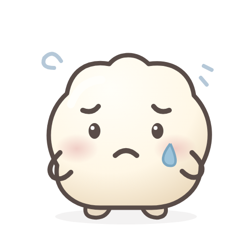
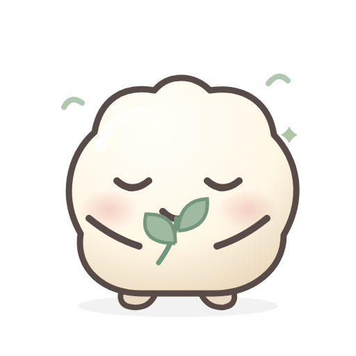

身体的节奏
看见变化，
多懂自己一点。
连接 Apple 健康，查看心率、血氧、HRV 与心电图。用日、周、月趋势，认识自己的日常。每次读数都有来源与采样时间，不用单次变化定义自己的感受。
HRV · 一周趋势示例
48 ms每个人，都有自己的节奏
仅供日常参考，不用于疾病诊断。
留一片晴空，给自己
看看身体，记记心情，累了就缓一缓。
从一分钟的呼吸，到睡前的安静时光，
小晴空都在。
为 iPhone 与 Apple Watch 而设计
不必时刻满分，舒服就很好。
48 ms
慢慢积累，了解自己的节奏。
68 次/分
98 %


界面概念展示 · 健康数值为示例
从记录开始，多了解自己
看看健康趋势，记记每天的心情。
按自己的节奏，慢慢养成关心自己的习惯。
身体的节奏
连接 Apple 健康，查看心率、血氧、HRV 与心电图。用日、周、月趋势，认识自己的日常。每次读数都有来源与采样时间，不用单次变化定义自己的感受。
仅供日常参考，不用于疾病诊断。
心情的天气
开心也好，疲惫也好。选一个小团子，记下心情、压力和想说的话，给此刻的自己一点回应。
收集今天的小美好
点选心情，看看团子的小动作
陪我缓一缓
有时，需要的只是片刻停留。
跟着团子舒缓呼吸，或什么也不做，安静待一会儿。
舒缓呼吸，或安静陪伴。团子用小动作回应你。
1、3、5 分钟，按舒服的节奏来，随时可以暂停。
完成后可以记录「好一些」或「差不多」，也可以跳过。
不需要憋气，也不用追求做得标准。
准备好了，再慢慢开始
按舒服的节奏，不需要憋气
网页仅演示团子动作，不播放声音
把时间，还给自己
挑一张专辑，听一会儿喜欢的声音。
从放慢脚步，到准备入睡，把时间还给自己。

属于你的安静时刻
仿佛走进一片森林，给呼吸留一点空间。
把自然，带在身边
曲库概念展示 · 网页不播放音乐
首页推荐、刷新换一张，或进入全部专辑，按曲目顺序听下去。
主动下载后离线收听，管理已下载的曲目和占用空间。
拖动进度、查看剩余时间，在单曲、顺序和随机循环间选择。
睡前陪伴
选心情，也可以跳过；选声音与风景，再留一个停止时间。喜欢的组合，可以保存成自己的方案。
抬腕查看健康摘要，快速记下心情。Apple Watch 可独立播放声音，也可控制 iPhone。
根据本地健康记录，提供可关闭的放松与健康提醒。通知遵循系统设置，把节奏交还给你。
晴空、林间、海岸、星夜，四种场景随心切换。喜欢的风景，也能保存为壁纸。
慢慢了解，慢慢靠近自己
读一点、记一点，再回头看一眼。
不比较，也不急着给变化找答案。
安心小知识读一点，安心一点
按主题阅读，搜索想了解的内容，收藏想再读的文章。参考来源可以直接打开，已读与收藏的图文在成功缓存后，离线也能重温。
分类与搜索 · 收藏与已读 · 图文离线时间线与每周回顾
把心情、生活标签与陪伴练习放在一起。看看这一周的分布，保留记录，也可以随时删除。
心情、压力和想说的话
完成过的每一次陪伴
留意变化，不作因果判断
授权后，也能查看 Apple 健康中的睡眠时段、时长与阶段。

团子收藏与心情明信片
记一次心情，遇见眯眼微笑与晨光草地。
完成一次陪伴，收集眼里有光与月下湖畔。
不用连续打卡，也不用一直开心。已经解锁的收藏，不会因为漏记或删除记录而收回。选一个团子、一处风景，写一句话，预览后再决定要不要分享。
明信片默认不带健康数值、日记或压力分数。
好的陪伴，也懂得分寸
不需要账号，没有广告。
健康、心情、日记与分析留在设备上。
配对设备间同步心情与必要偏好，
公共内容服务只提供文章、专辑与音乐目录。
小晴空
了解身体的节奏，也照顾自己的感受。
应用仍在测试中，文章与音频内容也在持续完善。
适用于 iPhone · iOS 18 及以上
Apple Watch · watchOS 11 及以上